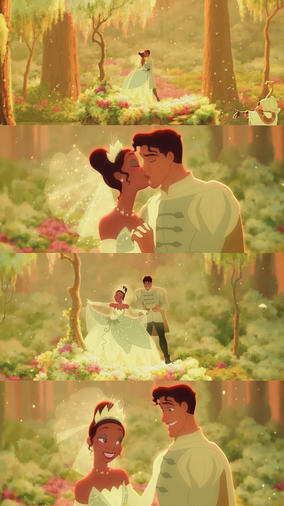
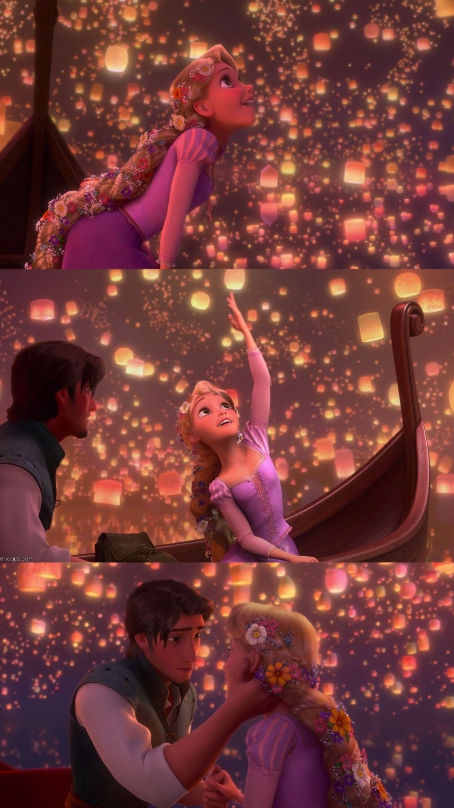
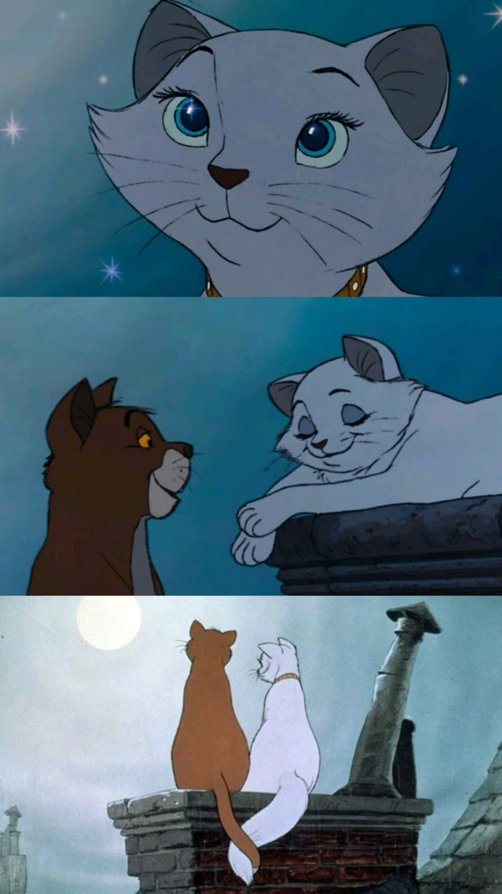

O grande problema é que controlar a entrada e saída de livros sem critério vira uma bagunça completa. Os prazos estouram, ninguém sabe onde os exemplares estão e os livros simplesmente começam a sumir sem deixar rastro. No fim das contas, quem sai perdendo é o leitor, que vai atrás de um título e nunca encontra nada disponível porque a desorganização toma conta de tudo..

A Princesa e o Sapo (2009) é um clássico da animação da Walt Disney Animation Studios. Ambientado em Nova Orleans, o filme segue a história de Tiana, uma jovem trabalhadora que sonha em abrir seu próprio restaurante, mas acidentalmente se transforma em sapo após beijar o Príncipe Naveen, que também foi enfeitiçado.
Ver a nossa equipe
A imagem mostra uma colagem de três cenas do filme de animação Enrolados (Tangled). Nelas, a personagem Rapunzel e o herói Flynn Rider estão em um pequeno barco cercados por milhares de lanternas flutuantes iluminando o céu noturno. Nas duas primeiras imagens, Rapunzel aparece encantada e maravilhada, olhando e estendendo a mão para as luzes, enquanto na última cena ela e Flynn trocam um olhar cúmplice e romântico de proximidade.

A imagem traz uma colagem de três cenas do filme de animação Aristogatas, da Disney. Ela destaca a gata branca Duquesa e o gato alaranjado Thomas O'Malley em um momento romântico sobre os telhados de Paris durante a noite, com foco inicial nos olhos brilhantes de Duquesa, passando pela conversa afetuosa entre os dois e terminando com o casal de costas, observando o céu iluminado pela lua enquanto entrelaçam suas caudas.
Ver a nossa equipa